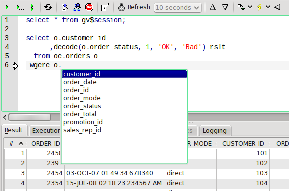
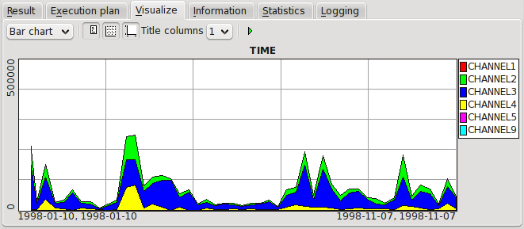
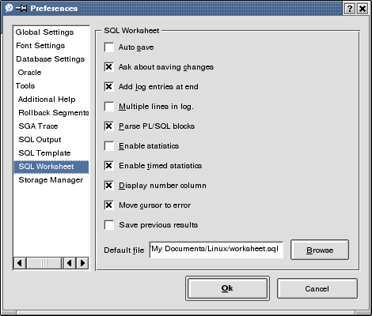

4.1 SQL Editor
This tool provides a way to execute arbitrary SQL or PL/SQL code and also investigate how it is executed and it's resource consumption.

The worksheet is split into two panes. The upper one is the editor where you enter the queries you want to run.
In the lower you can investigate the result.
Tip You can enter multiple queries/statements by separating them with a semicolon.
Toolbar & menu
There is a toolbar and a tool menu available for the worksheet. They both contain the following commands.
- Execute Current Statement
- This executes the statement you current are within or after. When executed the statement executed will be
highlighted in the editor. The keyboard shortcut is CTRL-Return and F9.
- Step through statements
- By pressing this button you can execute all statements entered (and separated by semicolon).
The keyboard shortcut is F9.
- Execute All Statements
- Execute all the statements in the editor. You get no result from the execution, the statement is simply executed.
You can investigate the success of the commands in the Logging pane of the result. The keyboard
shortcut is F8.
- Execute Newline Separated
- Execute a statement that is separated by two newlines (one empty line) instead of the normal ';' character.
Could be useful for people who are familiar with some other Oracle tools. The keyboard shortcut is SHIFT+F9.
Only available in the menu, not in the toolbar.
- Reexecute last statement
- This will re-execute the last executed statement. The keyboard shortcut is F5.
- Describe under cursor
- Describe the table currently under the cursor. The keyboard shortcut is F4.
- Explain plan of current statement
- Displays explain plan of current statement.
- Stop execution
- Abort execution of the currently running query. This will not work in Windows where the query will keep running in the background until the first row of the query is returned and consume server resources before it is aborted. When you execute a new statement the current execution will be aborted.
- Clear execution log
- Erase the contents of the rows under the Logging pane of the result.
- Gather session statistics of execution
- Enable or disable collecting statistics when running the statements.
This will cause TOra to execute at least two extra queries for every statement executed when enabled.
Next to this button in the toolbar is a combo box in which you can choose the refreshtime for the charts
in the statistics pane.
- Previous Log Entry
- Display the result of the previous entry in the log. If result caching is on in the settings the previous
result is displayed, if it isn't the statement is reexecuted to generate the result. Keyboard shortcut is
ALT+Up.
Only available in toolbar, not in menu.
- Next Log Entry
- Display the result of the next entry in the log. If result caching is on in the settings the next result
is displayed, if it isn't the statement is reexecuted to generate the result. Keyboard shortcut is
ALT+Down. Only available in toolbar, not in menu.
- Insert current Saved SQL
- Popup menu containing saved SQL. Insert chosen SQL under cursor position. Keyboard shortcut is CTRL+SHIFT+S.
- Run current Saved SQL
- Execute selected saved SQL. For more information see saved SQL. Keyboard shortcut is F7.
This is only available in the toolbar.
- Save last SQL
- Save the most recently executed SQL to the saved SQL list. When pressed will ask for the name to save
the SQL under. If ':' is entered in this name it will separate into submenues on the colon.
- Current duration
- While a query is currently executing you can see how long the query has been running in the right of the toolbar as a slowly ticking up the seconds. This clock will not stop when the first row is returned but run until all rows are read or the query is aborted. Moving the cursor over this label will also display a tooltip containing the SQL currently executing.
- Change connection
- Change the connection this tool window should operate on.
Using the worksheet editor
TOra uses a ; to separate statements in the same way as SQL*Plus. One difference is that TOra doesn't count whitespaces in any way to separate statements. You could write several statements on the same row and it wouldn't be a problem.
Another difference to SQL*Plus is that TOra parses the SQL you write to determine if you are within a PL/SQL block.
If that is the case the entire block will be executed. This feature can be enabled or disabled in the options.
SELECT * FROM dual; SELECT * FROM all_tables;
BEGIN
DBMS_OUTPUT.PUT_LINE('Hello');
END;
In the example above there are three statements that TOra will recognize and execute.
There are a few words that are treated as comments for compatibility with SQL*Plus scripts. They are –, REM and PROMPT. Comments will disregard whatever is to the right on the line. Also multi line /* ... */ style comments are recognised and ignored.
You can also use bind variables in the worksheet by using the normal : character. (see gettingbindparametersfor more information how this works). One nice feature is that the first line retrieved from the result set is stored in the parameter cache with a bind name the same as the column name in lowercase. The example in the getting bind parameters could have been used directly after executing the line select * from essprc and get the second row in the table by just using the defaults of the bind dialog if essprc contains a column named prcid.
You can also describe objects returned as in PL/SQL by using either DESC or DESCRIBE and an object name.
Exploring the result
There are six different panes available with information about the executed statements.
| Result |
This contains the actual result of the query or describe. For some notes about descriptions see this note.
|
| Execution plan |
The execution plan(see explainplan) of the current statement.
|
| Visualize |
Can be used to visualize the current content of the result. The first column is assumes to contain labels
and the rest contain the data.

The toolbar available contains the following controls.
- Chart type
- What kind of chart to generate. Available types are Bar Chart, Line Chart and Pie Chart.
- Display Legend
- Display chart legend on the right of the generated chart.
- Display Grid
- Display a grid in the generated chart.
- Display Axis Legend
- Display legends of the axises of the generated chart.
- Title columns
- TODO
- Update chart
- Generate a chart of the current data in the result tab and the current settings.
|
| Information |
The information available about the current statement in the SGA.
|
| Statistics |
The statistics collected when this statement was run. You need to enable statistics for this to be enabled.
To update the statistic view simply change to another tab and change back to statistics.
Charts are updated at the interval specified in the toolbar regardless of if you refresh statistics or not.
|
| Logging |
This pane will display the history of the statements you have executed and their result.
It can be sorted up or down depending on options. You can see the statement, it's result and the time (as
recorded by the database) when it was executed. You can also see how many seconds until the first row was
received. A new statement isn't added to the log until the first row of the query is returned or the
statement has executed, whichever comes first.
|
Preferences
There are quite a few preferences available for the SQL editor.

- Auto save
- If checked the worksheet will always save changes to the editor without asking when the window is closed.
- Ask about saving changes
- Ask about saving changes to the worksheet when it is modified. Selecting the Auto save have precedence
over this option.
- Add log entries at end
- If checked new entries in the Logging pane will be added to the end of list, otherwise they will be added at the top.
- Multiple lines in log
- If checked the lines in the log will display all the lines of the SQL executed. If not checked only the first line is displayed, although you can still see all of it in the tooltip or editor if you want to. For more information(see Using lists).
- Parse PL/SQL blocks
- If this is checked TOra will parse the text to determine PL/SQL blocks in the editor and execute them as one statement. If it isn't checked statements are strictly separated by ;.
- Enable statistics
- Indicates if statistics should be enabled or disabled as default when a new worksheet is opened.
- Enable timed statistics
- Set this to make TOra always enable timed statistics for the sessions that it is collecting statistics for. Observe that timed statistics will not be disabled after the worksheet is closed. The change is strictly for the current session though.
- Display number column
- Indicate whether or not to display the number column as the first column of the result or suppress it.
- Move cursor to error
- Move the cursor to the location of an error in an execute statement.
- Save previous result
- Save the results of all previous statements. This can consume a lot of memory, but will increase time to navigate history results. You can still clear this cache by erasing the log.
- Execute directly when selecting in log
- TODO.
- Default file
- A filename to open automatically when you start a new worksheet. Choose the Browse button to select the file in a file dialog.
Saved SQL
This is a feature you can use to quickly access SQL you often use. This is a popupmenu accessible in the toolbar of a worksheet. This popup will display all the SQL under "toWorksheet:" in the SQL dictionary(see SQL Editor). You can create submenues by adding a ":" character in the SQL name. The name of the SQL dictionary is what is used to generate the menu and not the description. You can still use placebinders in saved SQL. By default this list is empty.